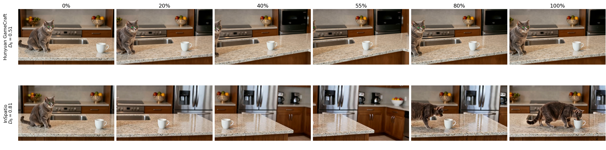
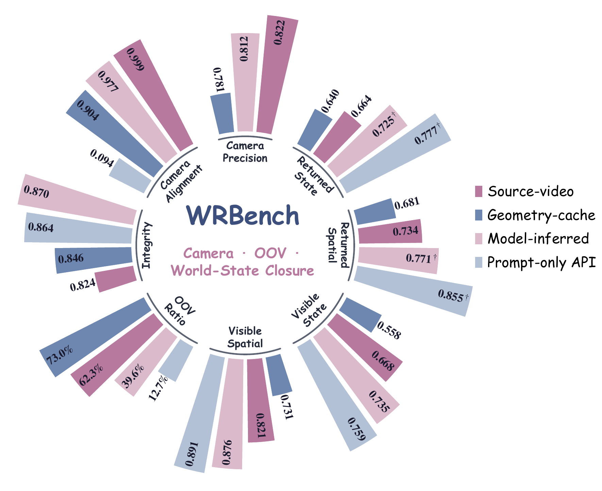
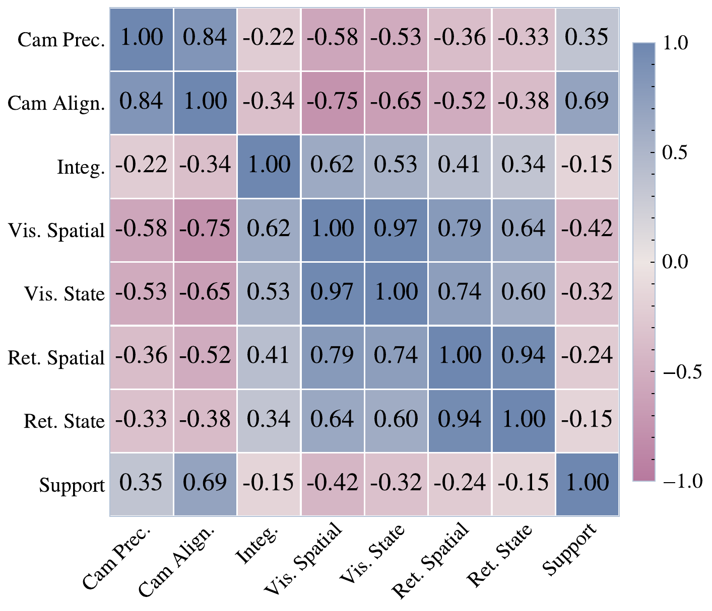
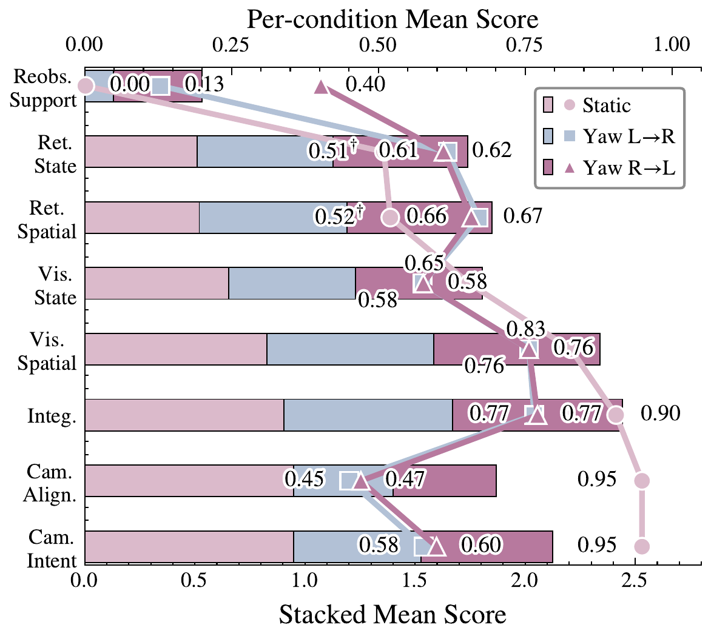
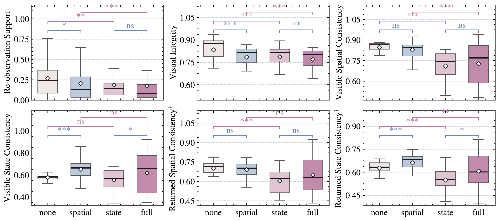
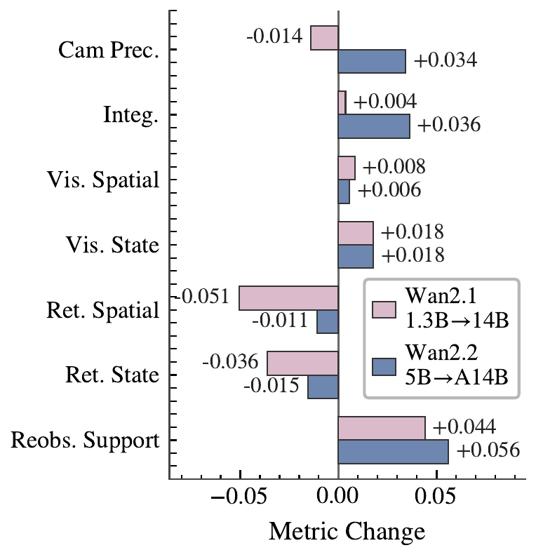
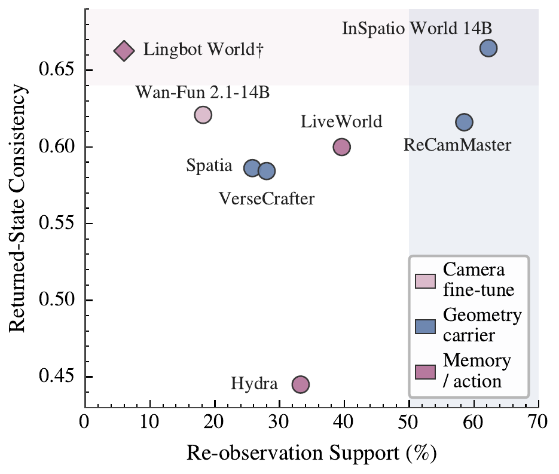
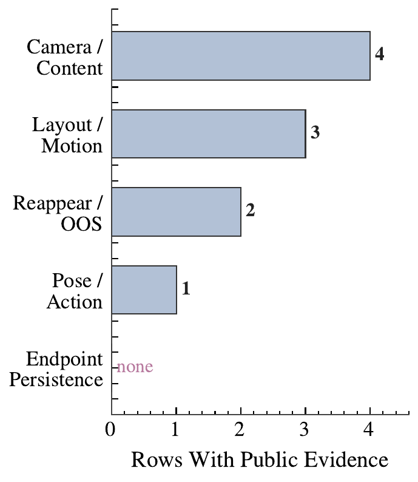
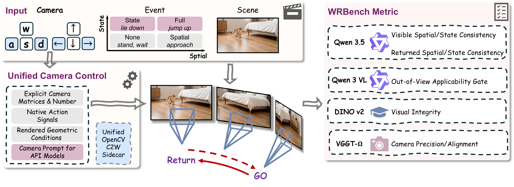
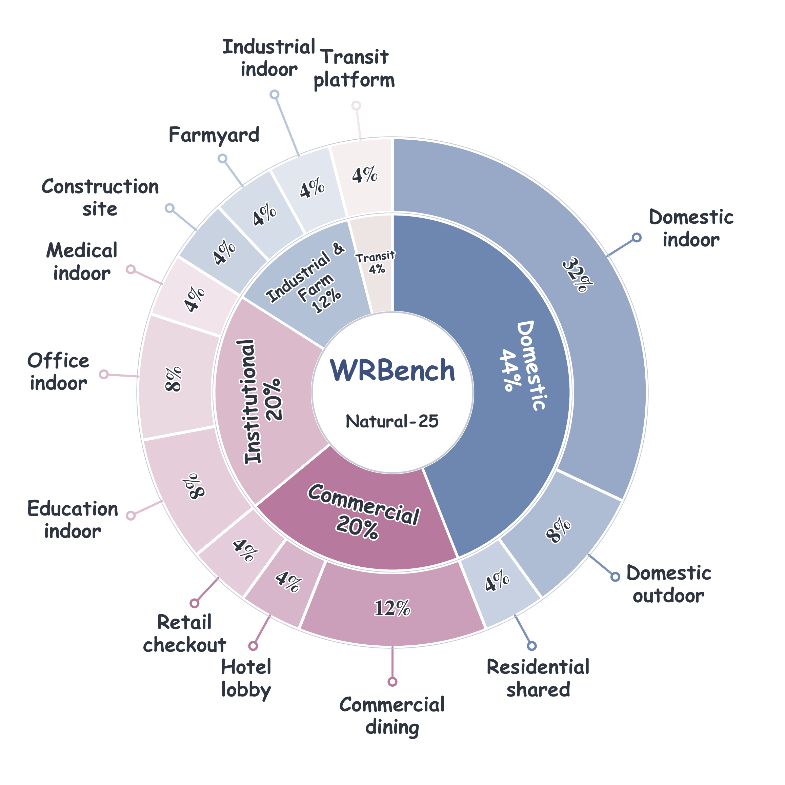

While the cup is on screen, does it look correct? Visible quality is usually high — but it does not predict a correct return, and can even reflect a test that is never posed.
high, but not predictive
Diagnostic benchmark for dynamic world-state evaluation under viewpoint changes
WRBench treats a camera move as an intervention on observability: it fixes a scene and an event, then turns the camera away while something changes out of view.
It tests world-state persistence under viewpoint intervention — the background may return, but the changed object often does not.
The gap
Point a camera at a cup on a table. Pan away. While it is hidden, the cup is knocked over. Pan back. A real world keeps the cup down — but evaluated video generators often quietly stand it back up, move it, or smear it. On return the target must preserve the event endpoint, not merely reappear plausibly. That is the difference between a world model and a video renderer — and WRBench is built to catch it.
While the cup is on screen, does it look correct? Visible quality is usually high — but it does not predict a correct return, and can even reflect a test that is never posed.
Did the camera leave and return so the hidden change can be re-checked? Only some paths create judgeable hidden-and-returned evidence.
When the camera comes back, is the cup still knocked over? No model reliably maintains the event endpoint — returned-state correctness is where all 23 fall short.
Kitchen cup knock · camera pans right-to-left (horizontal turn) · same event, two models. Both earn judgeable re-observation; only one keeps the cup knocked over when the camera returns.
The knocked cup returns in an inconsistent state.
The cup state is reconstructed far more consistently on return.

Frame montage: identical knock event and camera path, different returned world states.
Findings
From 23 models and 9,600 videos: Findings 1–3 hold across every model and interface; Findings 4–6 diagnose what changes within a controlled model family. Everything below — benchmark positioning, the diagnostic profile, the charts, and the case studies — is evidence for one of them.
Six headline findings, stated as in the paper — each names a mechanism, not a leaderboard rank.
Positioning
Table 1 from the paper. The comparison does not rank the value of prior benchmarks — each covers an important slice of video or world-model evaluation. It records which benchmark targets are explicit enough to enable dynamic world-state evaluation under viewpoint intervention. Symbols mark stated benchmark targets, not overall benchmark value.
Leaderboard
WRBench reports a diagnostic profile, not one winning score. Read the columns as the three stages from the gap: Vis. = visible consistency while the target stays on screen; Reobs. support = fraction of outputs with judgeable hidden-and-returned evidence (whether a return test is possible); Ret. = returned spatial/state consistency when the camera comes back — averaged only over those judgeable clips (daggers mark sparse support). Click any header to sort.
Visible consistency — largely solved; high scores here do not predict a correct return.
Applicability gate — whether a hidden-and-returned test can run, not whether it passes.
Returned consistency — the outcome WRBench is designed to measure (2,073 judgeable clips).
† Ret. spatial and Ret. state are conditional means over the judgeable re-observation subset. Italic returned scores mark low re-observation support (fewer than 10 judgeable clips or support below 10%). Cam Prec. is not applicable to prompt-only API rows.
Evidence
Read each figure as chart + plain-language meaning. Three questions run through the section:
Visible quality and returned consistency barely move together — score the return, not the frame.
In-place state change is the universal hard case; relocation is easier to preserve.
Scale, architecture, and training mostly add re-observation support — not returned consistency.

Figure 4. Best score each viewpoint condition type reaches on every diagnostic dimension.
How to read this: each spoke is one diagnostic dimension; the colored outline is the best score reached by a viewpoint condition type. A bigger outline = better on that axis.

Model-level correlations among the diagnostic metrics (23 rows).
How to read this: darker = stronger correlation. If two metrics rose together, image quality would predict a correct return. They don’t.
How to read this: each group of bars is a camera condition. Watch how re-observation support grows while returned-consistency bars stay flat.

Static hold vs. horizontal camera pan: re-observation support moves, returned scores do not.
How to read this: each event is split into two switches — did the object move, and did its state change. The boxes compare flipping one at a time.

Metrics under a 2×2 event design; stars mark paired Wilcoxon significance.
How to read this: the paradigm axis (F3) decides which models can even pose the return test; the twelve Wan-derived models then act as one controlled stress map (F4–F6), each panel varying one increment to ask whether it adds re-observation support or actually preserves the hidden outcome.

A · scale / version

B · architecture

C · training
Cases
Beyond the knocked cup above, three more head-to-head comparisons. Each fixes the scene and event, varies one factor, and shows why judgeable re-observation and correct returned consistency can diverge.
Forensics
Appendix montages show how stage-local successes — readable frames, camera motion, visible action — can still fail at returned spatial and state consistency.
Method
The apparatus behind the numbers: Natural-25 fixes scene, event, and camera path; WRBenchLib records what each model actually received; six dimensions separate visible consistency, re-observation support, and returned consistency.
25 scene families × 4 event tiers × 3 camera conditions. Events span fold, jump, knock, place, sit, and tip — from spatial relocation to in-place state change.
Maps each test record to model input, delivered viewpoint condition, generated video, and provenance — so interfaces are compared on the evidence they actually received.
2,547 deduplicated annotator verdicts over 1,156 comparison pairs calibrate automatic evaluators dimension by dimension.
Prompt-only, model-inferred, geometry-cache, and source-video types carry different amounts of already-seen footage.
Each test fixes the same initial scene and event, then varies the camera path so evidence stays visible, becomes hidden, or returns. The prompt never reveals the post-return outcome — the generated video itself must carry it:
In words: initial observation, event, timing, viewpoint change, and prompt. WRBenchLib maps every record through a model-specific adapter:

WRBench pipeline: requested-camera precision, prompt-camera alignment, visual integrity, visible consistency, re-observation support, and returned consistency.

Natural-25: scene families × spatial/state event tiers × camera conditions.
Dimensions
Human
2,547 deduplicated annotator verdicts over 1,156 released comparison pairs validate each WRBench dimension separately — not one collapsed preference score. Agreement uses prevalence-robust AC1; rank ρ is Spearman alignment between the automatic margin and the ordered human label.
Visual integrity uses a separate 190-pair holdout. Rev. counts opposite-direction threshold decisions; thresholds are fixed before reporting. Disagreement appears mainly as ties around small differences, not systematic reversal.
Cite
@article{lu2026wrbench,
title={World Models Need More Than Static Scene},
author={Jinpeng Lu and Dexu Zhu and Haoyuan Shi and Yinda Chen and Linghan Cai and Guo Tang and Jie Cao and Yong Dai},
year={2026},
note={Preprint},
url={https://github.com/JinPLu/WRBench}
}